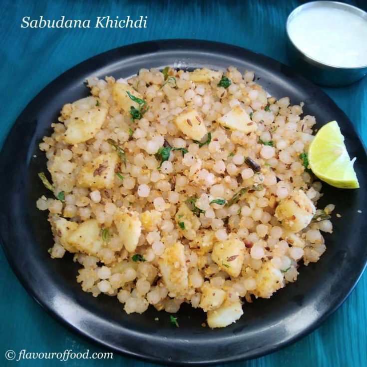

Sabudana Khichidi

Description
If there’s one dish that is quintessential during the fasting or vrat season in the Indian subcontinent,
it has to be Sabudana Khichdi. Made with sago pearls or sabudana, boiled potatoes, roasted peanuts and a few spices,
Sabudana Khichdi Recipe is most popular during the fasting days of Hindu festivals like Navratri, Mahashivratri and Ekadashi.
Sabudana is the Hindi term for tapioca pearls, and are made from the roots of the cassava plant. Another name of this plant is tapioca or yuca.
Since it is naturally a plant-based foodstuff and is gluten free as well, it is a great vegan alternative as well as a tasty substitute
for wheat-based flours too.
Ingredients
- Sabudana
- Water
- Potatoes
- Peanuts
- Green Chilli
- Suger
- Salt
Instructions
- Rinse sabudana very well in water. Then soak sabudana overnight or for 3 to 5 hours. Drain the soaked sabudana very well of all the water and set aside.
- Boil the potatoes and when warm peel and chop them.
- In a pan, dry roast the peanuts till browned and when cooled make a coarse powder in a mortar-pestle or in a dry grinder.
- Mix the coarsely powdered peanuts, salt and sugar with the drained sabudana.
- Now heat peanut oil or ghee.
- Now add the green chillies Fry for a few seconds. Now add chopped boiled potatoes and saute for a minute.
- Add the sabudana. Keep on stirring often on a low heat for about 3 to 5 minutes.
When the sabudana loses their opaqueness and starts becoming translucent they are cooked.